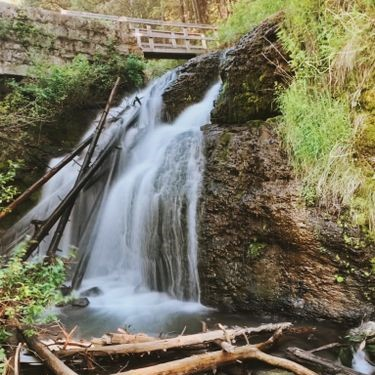
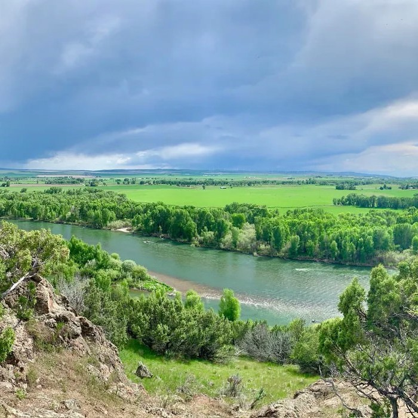

Hiking in Rexburg
Have you ever wanted to go on a hike in rexburg but you don't know where to go? Well There is no need to worry anymore. This website will help you find quality and close locations to go for a hike around Rexburg tested by long lived residents of the town.
Navigating this website
 Locations Page:Here you can browse our large selection of different hiking locations around rexburg and find a spot that is just right for you and your adventerous mood.
Weather Page:If your going hiking you are going to want to check the weather. Quick and easy you can see the weather around rexburg here on our page.
About me Page:This page is about me the author of the page Josh Herring
Feedback Page:Is ther something we can improve on or a problem you are having? Go ahead and submit a form to let us know.